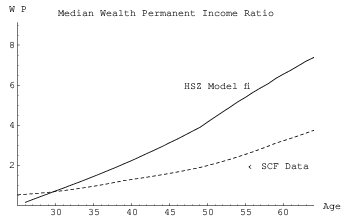
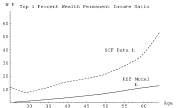
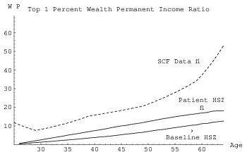
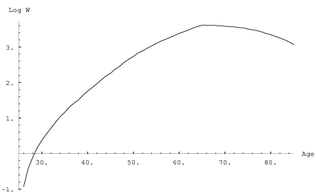
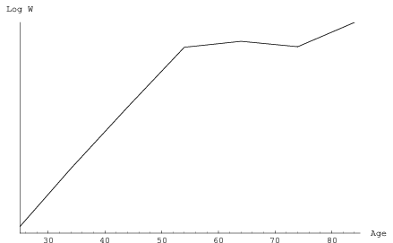
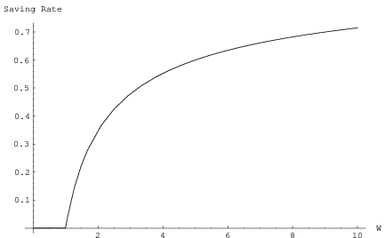
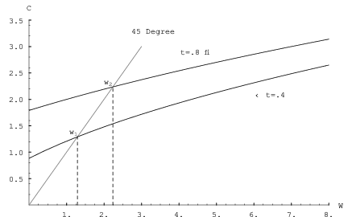

This paper considers several alternative explanations for the fact that
households with higher levels of lifetime income (‘the rich’) have higher
lifetime saving rates (Dynan, Skinner, and Zeldes Dynan et al. [1996];
Lillard and Karoly Lillard and Karoly [1997]). The paper argues that the
saving behavior of the richest households cannot be explained by models
in which the only purpose of wealth accumulation is to finance future
consumption, either their own or that of heirs. The paper concludes that the
simplest model that explains the relevant facts is one in which either
consumers regard the accumulation of wealth as an end in itself, or unspent
wealth yields a flow of services (such as power or social status) which
have the same practical effect on behavior as if wealth were intrinsically
desirable.
Keywords: saving, consumption, Life Cycle model, rich, bequests, inheritance
JEL Codes: D11, D12, D31, D91, E21 H23, H24
This paper was published in the volume Does Atlas Shrug? The EconomicConsequences of Taxing the Rich, Harvard University Press, 2000, Edited by Joel
B. Slemrod:
@inproceedings{WhyDoTheRich, author ={Christopher D. Carroll}, booktitle ={Does Atlas Shrug? The Economic Consequences of Taxing the Rich}, editor ={Joel B. Slemrod}, publisher ={Harvard University Press}, title ={Why Do the Rich Save So Much?}, chapter = 14, year = 2000, url ={https://llorracc.github.com/WhyDoTheRich/blob/main/Why.pdf},}
I am indebted to Sidney Carroll, Elizabeth B. Carroll, and Elizabeth I. Carroll formany of the insights in this paper. Any errors are my own.
F. Scott Fitzgerald, to Ernest Hemingway: ”The very rich are different from you and me.”
Ernest Hemingway, to F. Scott Fitzgerald: ”Yes. They have more money.”1
1 Introduction
The saving behavior of the wealthy has received remarkably little academic
attention in the past twenty years or so. This is probably largely attributable to a
relative lack of good data: The Survey of Consumer Finances is virtually the only
publicly available source of detailed data on wealthy households, and even the
SCF has only a few hundred really wealthy households in each triennial
wave. Despite recent neglect, the topic is an important one for scholars
of saving behavior, for at least two reasons. First, wealthy households
should provide a powerful means of testing whether the standard model
of consumer behavior, the Life Cycle/Permanent Income Hypothesis, is
adequate as a universal model of saving and consumption. This is an
application of the general scientific principle that models should be tested under
extreme conditions; if they do not hold up, a new model (or an extended
version of the old one) is called for. The second reason for studying the
wealthy is that they account for a large share of aggregate wealth. In fact,
some understanding of the saving behavior of the wealthy is probably
indispensable to any credible attempt to account for the magnitude of aggregate
wealth.
Although the primary source of evidence in this paper will be the four Surveysof Consumer Finances conducted in 1983, 1989, 1992, and 1995, the inevitable
limitations of those data will be apparent. The paper therefore also relies to a
considerable extent on unorthodox kinds of evidence, ranging from information in
the annual Forbes 400 tabulation of the richest American households, to
quotations from and about the very rich, to the results of a “focus group” meeting
with a set of wealthy individuals who were directly asked their reasons for
saving.
The paper begins by considering whether the standard model of household
consumption and saving decisions, the Life Cycle model, provides an adequate
description of the behavior of wealthy households. I argue that the Life Cycle
model, or at least the traditional incarnation in which the decision-maker saves
mainly to finance his own future consumption, cannot simultaneously explain
both the behavior of the median household and the behavior in the upper tail of
the wealth distribution. The next section of the paper considers whether a
“Dynastic” model, in which the wealthy save mainly for the benefit of their heirs,
performs better. While the Dynastic model can explain some observations, and
probably does roughly apply to some households, I argue that it still does not
explain some important facts about the saving behavior of the wealthy.
Furthermore, the Dynastic model conflicts with the self-reported motives for
saving that many wealthy people voice. Finally, I consider a model in which the
wealthy save because, either directly or indirectly, they obtain greater pleasure
from possessing an extra dollar of wealth than they would get from an extra dollar
of consumption. Following Max Weber Weber [1905] as interpreted by
Zou Zou [1994] and Bakshi and Chen Bakshi and Chen [1996], I call this the
“Capitalist Spirit” model. I argue that a direct wealth accumulation motive is
indispensable in explaining at least some of the observed behavior of the very
wealthy.
2 Can the Life Cycle Model Explain the Behavior of the Wealthy?
A provocative recent paper by Hubbard, Skinner, and Zeldes Hubbard
et al. [1994] (henceforth, HSZ) argues that an expanded version of the Life Cycle
model in which uncertainty is modelled realistically can generate patterns of
wealth accumulation that are roughly consistent with average data from
household surveys, and amounts of aggregate wealth that are similar to observed
aggregate household wealth in the U.S. If such a model really did produce roughly
correct predictions for household wealth holdings, there would be little need to
study the very wealthy in detail, since they would merely be scaled-up versions of
everyone else.
Behind the scenes of the HSZ model, however, all is not well. While it is true
that the model can predict approximately correct average values for wealth or the
wealth-to-income ratio, it achieves this average by making large but offsetting
errors in predicting the underlying distribution of wealth. Specifically, the HSZ
model predicts, at most ages, that the household with median wealth
actually holds substantially more wealth than the median household in
SCF data holds and, at the same time, the model greatly underpredicts
the amount of wealth held by the households at the top of the wealth
distribution.
Figure 1 presents data on the age profile of the ratio of total
wealth to permanent income for the median household in a stochastic
Life Cycle model very similar to that of Hubbard, Skinner, and
Zeldes.2
The figure also presents data on the age profile of the actual median
household’s wealth/permanent income ratio from the 1992 and 1995
Surveys of Consumer Finances (dashing lines) during the working
lifetime.3
The figures make clear that the HSZ model substantially
overpredicts the wealth of the median household in the SCF
data.4

Figure 1:Median Wealth to Permanent Income Ratio, HSZ Model
How, then, can the HSZ model produce overall averages that resemble the
means of the SCF data? The answer lies in the wealth holdings of the top few
percent of the distribution. The solid line in figure 2 shows, for each age group,
the average ratio of wealth to permanent income for households at the
99th percentile (by age) in the HSZ model. The dashing line shows the
corresponding calculation using the actual data from the 1992 and 1995 SCFs.
Clearly, the richest SCF households own enormously more wealth, in
relation to their permanent income, than the richest consumers in the HSZ
model.

Figure 2:99th Percentile of Wealth to Permanent Income Ratio, HSZ Model
Taken together, Figures 1 and 2 show that the stochastic Life Cycle model
under HSZ parameter values matches the aggregate and average data
only because it makes two offsetting errors: overestimating the wealth
of the typical household and underestimating the wealth of the richest
households.
These simulations indicate that even the extended Life Cycle model
misses some crucial features of household behavior. However, the model’s
overprediction of the wealth of the median household is easily rectified;
Carroll Carroll [1992, 1997] argues that the model captures the main features of
the behavior of the median household very well if consumers are assumed to be
slightly more impatient than HSZ assume, and if the income process is modified to
include the benefits of aggregate productivity growth (HSZ assume that
households expect, and experience, zero aggregate productivity growth over their
lifetimes).
If assuming that consumers are somewhat more impatient can make the
stochastic Life Cycle model match the behavior of the median household, a
natural question is whether assuming that consumers are somewhat more patient
can make the model match the richest households. If so, then it might be possible
to argue that the only modification needed to make the stochastic Life
Cycle model match the facts is to assume that consumers with higher
lifetime incomes are also more patient. Figure 3 examines this possibility by
showing the pattern of wealth over the working life of consumers who are
the same as the consumers in the baseline HSZ model except that they
have a time preference rate of zero rather than the baseline HSZ time
preference rate of 3 percent annually. While the age/wealth profile is
certainly higher than in the standard HSZ model, it remains far below the
profile for the consumers in the top 1 percent of the SCF data. Plausible
modifications of other parameter values also fail to raise the model profile to the
level found in the data. In other words, the richest households are saving
more than can be justified even in a version of the Life Cycle model that
allows for very patient consumers with a strong precautionary saving
motive.

Figure 3:Wealth Profiles for Baseline and More Patient Consumers
The evidence presented thus far has concerned the saving behavior and wealth
profiles of consumers during the working period of life. The Life Cycle model has
another set of testable implications for behavior in the latter stages of life, after
retirement. In particular, according to the standard Life Cycle model, even patient
consumers want to spend all of their wealth before they die. Of course, an
uncertain date of death makes this difficult to achieve on one’s own. However,
there is a financial instrument which accomplishes exactly the goal implied by the
model: annuities. One test of the rough accuracy of the basic Life Cycle
model is therefore whether the wealth of retired households is largely
annuitized.
Carrying out such a test requires some methodology for calculating annuity
wealth. I assume that the annuity is fixed in real terms (primarily because the
largest form of annuity income, Social Security, is inflation-adjusted). I assume a
real interest rate, and use the mortality tables from HSZ to construct
the expected present discounted value of a one-dollar per year annuity
as:
(1)
where is the probability of surviving from year to year and
is the gross interest rate (I assume but results would be
similar for other plausible interest rates). The wealth value of the observed
annuity income YANN at age a is then YANN.
Using this method, and including home equity among annuitized wealth, the
mean household over age 65 has approximately 55 percent of their wealth in
annuitized form. However, among the richest 1 percent of households, the mean
annuitization rate is only 10 percent.
This evidence on annuitization is suggestive, but hardly conclusive. Annuity
markets are likely far from perfect; as in other insurance markets, adverse
selection may distort the market sufficiently to make inference hazardous.
Furthermore, annuities are the perfect financial vehicle to counter only one kind of
risk, mortality risk. If other kinds of risk are important, it is no longer obvious
that even selfish Life Cycle consumers should annuitize most or all of their wealth.
For example, if there is a small probability of a very expensive medical problem, it
may be important to have access to a large chunk of nonannuitized wealth in
order to pay the bills (assuming that no health insurance will fully cover every
possible medical catastrophe or every potentially desirable experimental
treatment).
An extreme assumption would be that annuity markets are so imperfect that,
for practical purposes, we can assume that annuities cannot be purchased. This
assumption would obviously vitiate the argument that the failure of the wealthy
to annuitize their wealth proves that they are not Life Cyclers. However, in
the absence of annuities the Life Cycle model has other implications. In
particular, it implies that selfish Life Cycle consumers, even patient ones, will
eventually begin running down their wealth as they age. Figure 4 shows
that by age 80 or so the HSZ model implies that consumers should be
dissaving at a fairly substantial pace (the simulations here follow HSZ’s
assumptions about mortality rates, which they derived from actuarial data,
with the modification that they assume that death occurs for certain at
age 100 if it hasn’t happened yet). However, Figure 5 shows the actual
average age profile of wealth across the four SCF surveys. Although wealth
accumulation slows, or perhaps halts, around age 65, there is no noticeable
decumulation of assets for consumers in the top percentile of the wealth
distribution.5

Figure 4:Age Profile of Log Wealth for the 99th Percentile, HSZ Model

Figure 5:Age Profile of Log Wealth for the 99th Percentile, SCF Data
Of course, nothing in economics requires us to believe that the only purpose of
saving is to finance one’s own future consumption; that is merely a hypothesis of
the basic Life Cycle model. One natural idea is that the wealthy do not run down
their assets because they want to leave bequests to their children. This thought
leads to the next model.
“I would as soon leave my son a curse as the almighty dollar.”
Andrew Carnegie.
3 The Dynastic Model
In the 1995 issue of the annual Forbes 400 count of the richest Americans, there
are at least 11 households containing descendants of Pierre du Pont (died 1817).
This might seem to be compelling evidence that at least some of the very
rich have a powerful bequest motive. On the other hand, apparently no
members of the 400 trace their wealth to Robert Morris, reputed to be
the wealthiest man in America at the time of the Revolutionary War.
And Andrew Carnegie gave away over 90 percent of his fortune before he
died. Furthermore, the fact that large bequests to children do occur does
not prove that provision of such bequests is the primary motivation for
accumulation.
This section of the paper considers a particular model of bequests proposed by
Barro Barro [1974]. The dynast alive at time is assumed to solve the
intertemporal maximization problem:
where corresponds to the lifetime consumption spending of the generation
living at time , is the dynasty’s wealth, is the (noncapital) income
earned by that generation, is the intergenerational interest rate, and is the
discount factor. The implications of this equation for macroeconomics spawned
the large literature on Ricardian equivalence in the 1970s and 1980s. More
recently, Altonji, Hayashi and Kotlikoff Altonji and Kotlikoff [1992] have tested
the Dynastic model with household-level data from the Panel Study ofIncome Dynamics and rejected its strong implication that only dynastic
resources should matter for any individual family’s consumption. The typical
PSID family, however, is not particularly wealthy, so those results do not
necessarily imply that the Dynastic model is a poor one for the wealthiest
families.
Although intuition suggests that the dynastic model might be interchangable
with other models in which leaving a bequest yields utility, in fact the model has
distinctive implications, such as Ricardian equivalence, that need not
follow from other models of bequests. As a result, the economic literature
has drawn a distinction between Dynastic models like the one specified
in equation 3 and “Joy of Giving” models in which the bequest yields
utility directly. For example, the Dynastic model implies that the size
of the bequest should be a function of the ratio of the parent’s lifetime
income and the child’s lifetime income; that parents should give larger
bequests to poorer children; and that childless wealthy people should
leave no bequests. All of these implications of the Dynastic model have
been tested in population-representative datasets and none has received
consistent empirical support. This section provides evidence that the
Dynastic model is also a poor description of the behavior of the richest
households.
To begin with some very informal evidence, Kennickell, Starr-McCluer, and
Sunden Kennickell, Arthur B. and Annika Sunden [1995] report some results
from a “focus group” session on saving motivations that was convened
as part of the preliminary work in designing the questions for the 1995
SCF.6
The eight members of the group were all wealthy
individuals,7
mostly in their 50s. Participants were asked “Thinking about your
reasons for saving, what sorts of reasons are most important to you?”
In the entire course of a three hour conversation of saving behavior,
however, providing a bequest was not mentioned once as a reason for
saving.8
A group of eight individuals is obviously too small a sample to convincingly
demonstrate the general absence of a bequest motive among the wealthy.
Somewhat more persuasive evidence is provided in the results of survey
questions on the 1992 SCF. Respondents were asked to list their five most
important reasons for saving. As shown in Table 1, only three percent
of the general population, and two percent of the wealthy households,
indicated that providing an inheritance was the most important reason to
save. 9
Furthermore, only 5 percent of the total population and 4 percent of the wealthy
households indicated that providing an inheritance was among their top 5 reasons
for saving. (The differences between the wealthy households and the general
population are not statistically significant here.)
Table 1:Percent Saying Inheritance is Important Reason to Save
Another obvious test of the model is to see whether the childless elderly
tend to dissave more than those with children. This hypothesis has been
tested using population-representative data; Hurd Hurd [1986] found
that in the population as a whole, there is no tendency for elderly with
children to decumulate faster than those without. Unfortunately, even
when the data from the four SCFs are combined, the number of childless,
elderly, wealthy households is too small to permit reliable estimation
of age profiles of wealth (only about ten percent of elderly couples are
childless).
Another option is to consider what childless elderly people say about their saving
and spending behavior. Respondents to the 1992 and 1995 SCFs were asked whether
their spending was greater than, equal to, or less than their income over the past
year, and how spending usually compared with income. The results are presented in
Table 2.10
The childless elderly were less likely to say that they dissave than those with
children, by this crude measure, either as a general rule or in the current year in
particular. Of course, it is possible that some of the “spending” of the elderly with
children consists of inter vivos transfers to those children. The real problem for
the Life Cycle model is the testimony of the childless, wealthy elderly, essentially
none of whom say that their spending exceeds their income. This is all the more
impressive given the comparatively small fraction of their income that is
annuitized.
Table 2:Saving By the Wealthy Elderly With and Without Children
Given the paucity of publicly available data on the very wealthy, it is not
surprising that the economic literature contains almost no empirical studies that
shed any light on the behavior of the childless wealthy elderly (although there
have been several studies that have examined the behavior of non-wealthy
childless elderly households, and have found that they do not dissave; see,
e.g., Menchik and David Menchik and David [1983] and the references
therein). I was able to find only one study that contains even tangential
information on the subject, a paper by Auten and Joulfaian Auten and
Joulfaian [1996] which uses a proprietary dataset compiled by the Internal
Revenue Service on 1982 decedents who paid estate taxes. From figures
in their Table 1, p. 62 it is possible to calculate that the mean wealth
of the childless decedents was virtually identical to that of those with
children - hardly what would be expected if those with children had a
powerful dynastic saving motive which the childless (presumably) do not
share.11
Furthermore, those with children actually contributed slightly more to charity
during their lifetimes than the childless. Again, a dynastic motive would suggest
the opposite. Finally, Auten and Joulfaian found no significant effect of children’s
income on the size of charitable bequests. This finding is consistent with evidence
by Wilhelm Wilhelm [1996] who found little support for the altruism
model’s implication that the size of bequests in families with more than one
child should be related to the relative lifetime income of the children.
Instead, Wilhelm found roughly equal bequests in about 80 percent of
bequests.
4 The Capitalist Spirit
This section presents a model in which wealth enters consumers’ utility
functions directly, and argues that such a model is both consistent with the
available data on the saving behavior of the wealthy and plausible on
grounds other than its consistency with these facts. Zou Zou [1994] and
Bakshi and Chen Bakshi and Chen [1996] have recently noted that Max
Weber Weber [1905] long ago argued that the pursuit of wealth for its own sake
was the ‘spirit of capitalism,’ and so I will call this the ‘Capitalist Spirit’
model.
4.1 The Model
Consider a consumer with lifetime wealth . Suppose the utility function for
lifetime consumption is a standard CRRA utility function, , and
suppose the consumer also obtains utility from wealth in a modified Stone-Geary
form,
Formally, the consumer’s maximization problem is:
The problem as described thus far can be interpreted in either of two ways.
The first interpretation is that the model describes a consumer deciding how to
allocate lifetime resources between consumption and wealth, with wealth yielding
utility directly. The second interpretation is of a consumer deciding how to
allocate lifetime resources between lifetime consumption and end-of-lifetime
wealth. (The reasons end-of-period wealth might yield utility include the “Joy of
Giving” bequest motive mentioned above, and several others. See below for
further discussion).
The first order condition for an interior solution to this problem is:
Call the which satisfies this equation . It is clear that for
sufficiently small the equation will be satisfied only by choosing a
larger than , that is, by ending with negative wealth. If we impose the
condition that consumers may not die in debt, the solution to the problem is:
If , end-of-period wealth will be a luxury good. Furthermore, if is
positive, there will be a range of initial wealth such that the marginal value
of an extra dollar of consumption always exceeds the marginal value of
an additional dollar of wealth. In this range, the consumer will choose
to spend all available resources and end the period (and life) with zero
wealth.
The problem can be solved analytically if we choose and . If we
set the solution is
Define the saving rate as the fraction of beginning-of-period total assets the
consumer ends up holding at the end of the period, . Figure 6 shows
the saving rate of this consumer as initial wealth goes from 0 to 10. For initial
wealth between 0 and 1 the consumer saves nothing, but above initial wealth of 1
the saving rate rises monotonically. Furthermore, as the saving rate
approaches 100 percent.

Figure 6:Saving as a Function of Wealth in the Capitalist Spirit Model
The essential insights from this model carry over when the model is extended
to many periods and when labor and capital income are incorporated: consumers
with permanent income below a certain threshhold will behave like standard Life
Cyle consumers and will try to spend all their assets before death, while
consumers with permanent incomes above the threshhold will save at ever
increasing rates as lifetime income rises.
The idea that bequests (charitable or otherwise) are insignificant for most of
the population, but become increasingly important in the upper reaches of the
lifetime income distribution, has been informally expressed by several previous
authors. Indeed, Modigliani Modigliani [1986] himself has argued that, to the
extent that bequests must be included in the Life Cycle framework, they should
be incorporated in precisely this “luxury good” manner. There is also a growing
body of empirical evidence in support of the proposition. Dynan, Skinner, and
Zeldes Dynan et al. [1996] examine data from several micro datasets and find
consistent and strong evidence that households with higher lifetime income leave
larger bequests; Lillard and Karoly Lillard and Karoly [1997] find similar
results.
In theoretical terms, the value added in this paper relative to the previous
literature is simply the proposal of a specific and simple functional form for the
consumer’s utility function which captures the informal idea that rich people
save more in a way that is at least roughly consistent with the empirical
evidence marshalled above. But such consistency may not be a high enough
standard.
“Utility maximization is a metaphysical concept of impregnable
circularity.” Joan RobinsonRobinson [1962], EconomicPhilosophy, Ch. 3.
4.2 Informal Evidence
The essence of Joan Robinson’s complaint about utility theory was that it is
possible to construct a utility function to justify any conceivable behavior: Just
assume that the behavior in question yields more utility than its alternatives. Any
postulated utility function, or proposed modification to a standard utility
function, should therefore be defensible on grounds other than its ability to
match the facts it was created to match. This section argues, using a
variety of informal evidence, that most qualitative descriptions of the
behavior of the wealthy, both by the wealthy themselves and by outside
observers, can be interpreted at a fundamental level as implying that
wealthy people derive utility either directly from the ownership of wealth or
indirectly, either from the activities that lead to wealth accumulation
or from a flow of services that is closely tied to the ownership of that
wealth.
The first important argument about the plausibility of the Capitalist Spirit
model concerns the assumption that the marginal utility of consumption decreases
sharply with the level of consumption. What matters critically here is really the
assumption that there is an alternative way to employ wealth whose marginal
utility decreases more slowly than that of consumption (and hence will be a
luxury good relative to consumption). It is important to recall that the
kind of consumption treated in the model is for strictly nondurable goods
and services. Carroll and Inhaber Inhaber and Carroll [1992] note that
“luxury” goods that are generally associated with the wealthy such as
art, estates, jewelry – even sports teams – are almost all assets. Indeed,
beyond a certain level of wealth it becomes difficult to imagine how one
could spend even the earnings on one’s wealth on nondurable goods and
services for personal enjoyment. For example, recent press accounts have
estimated Bill Gates’s net worth at $40 billion. Assuming a ten percent annual
rate of return, Gates would have to spend $4 billion a year, or over $10
million a day, on nondurable goods and services simply to avoid further
accumulation.
The proposition that the marginal utility of consumption approaches zero as
the level of consumption rises is also lent credence by statements of wealthy
people themselves. Andrew Carnegie, Cornelius Vanderbilt, and other fabulously
wealthy people refer to their “surplus” wealth, and of determining when one has
“enough” wealth. H.L. Hunt, then the richest man in the world, once said that
“for practical purposes, someone who has $200,000 a year is as well off as I am.”
Similar statements (appropriately adjusted for inflation) have been attributed
to William Henry Vanderbilt and John Jacob Astor, two 19th century
plutocrats.
One of the appealing features of the idea that rich people eventually reach
near-satiation in their consumption of nondurables is that this means one need
not assume a towering and obsessive greed lies behind their continuing
accumulation. If ‘greed’ is defined as a desire to possess wealth for its own sake,
even a modest amount of greed will suffice, so long as greed does not diminish
with wealth as fast as the marginal utility diminishes with consumption. Or, to
put the idea more concretely, if ownership of extra houses, yachts, artwork, or, for
that matter, corporations has even a modest intrinsic appeal, eventually that
appeal is likely to exceed waning lure of an extra dollar of nondurable
consumption. Of course, this is merely another way of saying that ownership of
these kinds of wealth yields utility directly, as the basic Capitalist Spirit model
assumes.
Of course, towering and obsessive greed cannot always be ruled out.
“The point is that you can’t be too greedy.” DonaldTrumpTrump [1988], in Trump: The Art of the Deal, ch. 2.
“Greed is good.” Ivan Boesky, in an address to business schoolstudents, University of California at Berkeley, 1987.
“The one with the most toys when he dies, wins.” Anonymous
And, among the 19th century plutocrats, according to historian Frederic Cople
Jaher Jaher [1980],
Money-making and keeping, not adorned or rationalized by
nobler explanations, actually constituted a powerful force in the
lives of the very rich. As boys, [Mining magnate William Boyce]
Thompson and [John D.] Rockefeller vowed to accumulate a
fortune. Thompson.…and [Andrew] Carnegie promised themselves
to retire after reaching a certain level of wealth, but kept pushing
onward. Rogers, a Rockefeller disciple and associate, said that the
Standard Oil partners made the profit motive a ‘religion,’ a faith
‘taught’ them by ‘Mr. Rockefeller.’
To the extent that these quotations express the general truth about the
motivations of the wealthy, the Capitalist Spirit model can be said to
apply directly. However, the view that all wealthy people are motivated
solely by a love of wealth for its own sake is surely extreme. A variety of
other plausible, and apparently very different, motivations are commonly
proposed, ranging from job satisfaction to status-seeking to philanthropic
ambitions to power-lust. The remainder of this section argues that, from a
modelling standpoint, these other common ideas–different though they may be
from a psychological perspective–are essentially indistinguishable from
each other and from the basic Capitalist Spirit model in terms of their
implications for individual behavior. The argument, therefore, is that if any of
these several proposed motivations is correct, the Capitalist Spirit model
constitutes an appropriate mathematical model of the behavior of the
wealthy.
Perhaps the most obvious example of a psychologically very different model which
would be behaviorally indistinguishable from the wealth-in-the-utility-function
model is the idea that the wealthy enjoy doing their jobs well, and that they view
the accumulation of wealth as the principal measure of job performance. This idea
appears frequently both in the statements of the wealthy themselves and in
commentary by others on the behavior of the wealthy. Two particularly direct
statements are:
“The rich man’s ‘duty,’ such as it is, is not to society but to
his art, and his art is making money.” Michael Lewis, The NewYork Times Sunday Magazine, July 1995
“Money’s just a way of keeping score. It’s the game that matters.”
H. L. Hunt, cited in JaherJaher [1980], p. 215
A closely related idea is suggested by the work of Robert Frank Frank [1985],
who has argued that an intrinsic component of human nature is a tendency to
judge oneself by comparison with others. If for some wealthy people wealth
is the metric of comparison, the utility function should contain not the
absolute level of their wealth but some function of the relationship of
their wealth to that of others. Bakshi and Chen Bakshi and Chen [1996],
Cole, Mailath, and Postlewaite Cole et al. [1992], and Zou Zou [1994]
have also argued that wealth matters because it is an index of social
status.12
For practical purposes of analysis of household-level data, however, either of these
ideas is virtually indistinguishable from the proposition that wealth enters the
utility function directly, and both ideas should produce essentially identical results
in a model of saving (although they might have different implications for
optimal tax policy; see the discussion below and the paper by Frank in this
volume).13
It is also possible that wealthy people continue accumulating because greater
wealth yields some other benefit that is more difficult to measure, such as power.
In particular, the view that wealth brings power is commonplace among both the
wealthy themselves and observers of the wealthy. (The idea that power is desirable
appears to be taken for granted.)
“The ultimate gift of colossal wealth, at least for the founders of
the richest families, was power.” JaherJaher [1980], p. 215
“Money is the measuring rod of power.” Howard Hughes
“’Twasn’t the money we were after, ’twas the power. We were all
playing for power. It was a great game.” James Stillman, GildedAge financier, cited in JaherJaher [1980]
“If you give away the surplus [money], you give away the
control.” Cornelius Vanderbilt, cited in JaherJaher [1980]
“‘Tis a sort of duty to be rich, that it may be in one’s power to do
good, riches being another word for power.” Lady Mary WortleyMontagu (1689-1762), English society figure, letter writer. Letter,c. 24 Sept. 1714, to her husband, cited in JaherJaher [1980].
This last quotation raises a final idea that crops up frequently in the
statements of the wealthy themselves: that the purpose of accumulating wealth is
ultimately to enable the wealthy person to pursue philanthropic activities, or to
establish institutions to carry out such activities. While such an evidently
self-serving interpretation should be subject to considerable skepticism, there are
many prominent examples of philanthropy that bear out the proposition. The
Ford Foundation, the Rockefeller Foundation, Carnegie-Mellon University, Duke
University, Johns Hopkins University, the Getty museum, and a host of other
prominent institutions owe either their existence or a substantial part of their
endowments to the munificence of wealthy individuals (often, although not
always, manifested through bequests). Morally, socially, and psychologically this
motivation for wealth accumulation is very different from pure greed.
However, if more wealth allows one to establish a larger foundation or endow
more institutions, the implications for saving behavior are again virtually
indistinguishable from the idea that wealth enters the utility function
directly.
5 Death and Taxes
Assuming that the Capitalist Spirit model provides a roughly correct description
of the behavior of wealthy households, a natural question to ask is what the
model implies about the relationship between accumulation behavior and
taxes. 14
Returning to the parameterized version of the model in which and
, if bequests (or wealth) are taxed at rate then the equation for
optimal consumption becomes:
Figure 7 shows the effect on consumption if bequest taxes are increased from
40 percent to 80 percent. Consider first the curve labelled , which shows
the optimal amount of consumption for consumers facing a 40 percent bequest tax
if bequests are not constrained to be positive. The actual consumption function,
of course, is the minimum of the 45 degree line and this curve. The point of
intersection of this curve and the 45 degree line, labelled , reveals
the level of lifetime wealth at which consumers begin to leave positive
bequests.
When the bequest tax is raised to 80 percent, the amount of consumption
shifts up, as indicated in the curve labelled . The point at which
consumers begin leaving bequests, , is substantially higher than when the tax
rate was 40 percent.
Hence, it is useful to think of the effects of raising the bequest tax by
considering three categories of consumers. The first are those with lifetime wealth
less than . They leave bequests under neither tax regime, so their behavior is
unaffected by the tax increase. The second region is those consumers with lifetime
wealth between and . These are the consumers who would leave bequests
if the bequest tax were only 40 percent, but prefer to consume all of their lifetime
wealth when the bequest tax rises. Finally, consumers with lifetime wealth greater
than will leave bequests even when the bequest tax is 80 percent.
However, at any level of lifetime wealth the size of the bequests they leave is
reduced by an amount equal to the gap between the two consumption
curves. It is simple to show that as lifetime wealth goes to infinity the
fraction of lifetime wealth bequeathed approaches 100 percent even with
the higher bequest taxes. This is the region of the model presumably
corresponds best to the circumstances of fabulously wealthy people like Bill
Gates.

Figure 7:Effect on Consumption of an Increase in Bequest Taxes
Because the effect of taxes on consumption depends on the distribution of
consumers across the different levels of lifetime income, the aggregate effect of
bequest taxes in this model is impossible to judge in the absence of evidence (or
assumptions) about the distribution of lifetime income (and information about
the parameters of the model). If most bequests come from people with
, then an increase in the bequest tax could reduce bequests almost
to nothing. If, on the other hand, most bequeathed wealth comes from
consumers with very large amounts of lifetime income, increasing the
bequest tax might have very little effect on either consumption or (pre-tax)
bequests.
In principle, it should be possible to tease out estimates of the relevant
parameter values from available data on wealth, consumption and income, using
methods like those employed in an impressive recent paper by Gourinchas and
Parker Gourinchas and Parker [2002]. Those authors assume a “residual value
function” that characterizes the utility experienced during the last part of life that
is mathematically very similar to the “bequest utility” function postulated in the
model here. Gourinchas and Parker assume that the coefficient of relative risk
aversion for the residual value function is the same as for the period utility
function, and they do not incorporate a Stone-Geary term like my , but their
estimation methodology could easily be adapted to estimate those two additional
parameters. Having estimated those parameters, they could then perform
simulations to gauge the predicted impact of changes in bequest taxes on
consumption.
6 Conclusions
A variety of evidence, both qualitative and quantitative, strongly suggests that
people at the top end of the wealth and income distributions behave in ways that
are substantially different from the behavior of most of the rest of the population.
In particular, it is difficult to explain the behavior of these consumers using the
standard Life Cycle model of consumption. A leading alternative to (or perhaps
just an extension of) the Life Cycle model is the Dynastic model in which the
decisionmaker cares about the utility of his descendants. The Dynastic model,
however, has problems of its own, starting with the testimony of many
wealthy households who say that providing an inheritance is not a principal
motivation for saving and ending with the fact that childless wealthy old
people do not appear to dissave. I argue that the simplest model capable of
fitting all the facts is a model in which wealth either enters the utility
function directly as a luxury good, or wealth yields a stream of services
that enter the utility function in ways that would be formally virtually
indistinguishable from a model in which wealth enters the utility function
directly.
In a way, the model reconciles Fitzgerald and Hemingway. Fitzgerald was right
that rich do not behave simply as scaled-up versions of everyone else.
They choose to save more and to accumulate faster because they can
“afford” the luxury of doing so. But Hemingway was right to suggest that
the rest of us would probably behave the same way, if only we had more
money.
References
Andrew B. Abel. Asset prices under habit formation and catching up
with the joneses. American Economic Review, 80(2):38–42, May 1990.
Fumio Hayashi Altonji, Joseph G. and Laurence J. Kotlikoff. Is the
extended family altruistically linked? American Economic Review, 82(5):
1177–98, 1992.
Orazio Attanasio and Guglielmo Weber. Is consumption growth
consistent with intertemporal optimization? evidence from the consumer
expenditure survey. Journal of Political Economy, 103(6):1121–57,
December 1995.
Gerald Auten and David Joulfaian. Charitable contributions and
intergenerational transfers. Journal of Public Economics, 59(1):55–68,
1996.
Kyle Bagwell and B. Douglas Bernheim. Is everything neutral? Journalof Political Economy, 96(2):308–338, 1988.
Gurdip Bakshi and Zhiwu Chen. The spirit of capitalism and
stock-market prices. American Economic Review, 86(1):133–157, 1996.
Robert J. Barro. Are government bonds net worth? Journal of PoliticalEconomy, 82:1095–117, 1974.
John Bartlett. Familiar Quotations. Little, Brown, and Company,
Boston, 15 edition, 1980. Edited by Emily Morison Beck.
Martin Browning, Angus Deaton, and Margaret Irish. A Profitable
Approach to Labor Supply and Commodity Demands over the Life-Cycle.
Econometrica, 53(3):pp. 503–544, 1985. ISSN 00129682. URL
http://www.jstor.org/stable/1911653.
Campbell, John Y. and John H. Cochrane. By force of habit:
A consumption-based explanation of aggregate stock market behavior.
Journal of Political Economy, 107(2):205–251, April 1999.
Harold L. Cole, George J. Mailath, and Andrew Postlewaite. Social
norms, savings behavior, and growth. Journal of Political Economy, 100
(6):1092–125, 1992.
George M. Constantinides. Habit formation: A resolution of the equity
premium puzzle. Journal of Political Economy, 98(3):519–543, June 1990.
Karen E. Dynan, Jonathan S. Skinner, and Stephen P. Zeldes. Do the
rich save more? Manuscript, Board of Governors of the Federal ReserveSystem, 1996.
Robert H. Frank. On Choosing the Right Pond: Human Behavior andthe Quest for Status. Oxford University Press, New York, 1985.
Pierre-Olivier Gourinchas and Jonathan Parker. Consumption over the
life cycle. Econometrica, 70(1):47–89, 2002.
R. Glenn Hubbard, Jonathan S. Skinner, and Stephen P. Zeldes. The
importance of precautionary motives for explaining individual and
aggregate saving. In Allan H. Meltzer and Charles I. Plosser, editors, TheCarnegie-Rochester Conference Series on Public Policy, volume 40, pages
59–126, 1994.
Michael D. Hurd. Savings and bequests. NBER Working Paper No.1708, 1986.
Herbert Inhaber and Sidney L Carroll. How rich is too rich?: incomeand wealth in America. Praeger Pub Text, 1992.
Frederic Cople Jaher. The gilded elite: American multimillionaires, 1865
to the present. In W. D. Rubinstein, editor, Wealth and the Wealthy inthe Modern World. Croon Helm, London, 1980.
Arthur Kennickell. Saving and permanent income: Evidence from the
1992 scf. mimeo, Board of Governors of the Federal Reserve System, 1995.
Martha Starr-McCluer Kennickell, Arthur B. and Annika Sunden. Saving
and financial planning: Some findings from a focus group. Manuscript,Board of Governors of the Federal Reserve System, 1995.
Lee Lillard and Lynn Karoly. Income and wealth accumulation over the
lifecycle. Manuscript, RAND Corporation, 1997.
Paul L. Menchik and Martin David. Income distribution, lifetime
savings, and bequests. American Economic Review, 83(4):672–690, 1983.
Joan Robinson. Economic Philosophy. Aldine, Chicago, 1962.
Donald Trump. Trump: The Art of the Deal. Random House, New York,
1988. With Tony Schwarz.
Max M. Weber. The Protestant Ethic and the Spirit of Capitalism.
Charles Scribner and Sons, New York, 1905.
Mark O. Wilhelm. Bequest behavior and the effect of heirs’ earnings:
Testing the altruistic model of bequests. American Economic Review, 86
(4):874–982, 1996.
Heng-Fu Zou. The ’spirit of capitalism’ and long-run growth. EuropeanJournal of Political Economy, 10(2):279–93, 1994.
 is the dynasty’s wealth, is the (noncapital) income
earned by that generation, is the intergenerational interest rate, and is the
discount factor. The implications of this equation for macroeconomics spawned
the large literature on Ricardian equivalence in the 1970s and 1980s. More
recently, Altonji, Hayashi and Kotlikoff Altonji and Kotlikoff [1992] have tested
the Dynastic model with household-level data from the Panel Study of
Income Dynamics and rejected its strong implication that only dynastic
resources should matter for any individual family’s consumption. The typical
PSID family, however, is not particularly wealthy, so those results do not
necessarily imply that the Dynastic model is a poor one for the wealthiest
families.
is the dynasty’s wealth, is the (noncapital) income
earned by that generation, is the intergenerational interest rate, and is the
discount factor. The implications of this equation for macroeconomics spawned
the large literature on Ricardian equivalence in the 1970s and 1980s. More
recently, Altonji, Hayashi and Kotlikoff Altonji and Kotlikoff [1992] have tested
the Dynastic model with household-level data from the Panel Study of
Income Dynamics and rejected its strong implication that only dynastic
resources should matter for any individual family’s consumption. The typical
PSID family, however, is not particularly wealthy, so those results do not
necessarily imply that the Dynastic model is a poor one for the wealthiest
families.
![∘ ---------------
−-1-+---1-+-4-(1-+-wT-)
cT = Min[ 2 ,wT ]. (5)](Why34x.svg)
 . Figure 6 shows
the saving rate of this consumer as initial wealth goes from 0 to 10. For initial
wealth between 0 and 1 the consumer saves nothing, but above initial wealth of 1
the saving rate rises monotonically. Furthermore, as the saving rate
approaches 100 percent.
. Figure 6 shows
the saving rate of this consumer as initial wealth goes from 0 to 10. For initial
wealth between 0 and 1 the consumer saves nothing, but above initial wealth of 1
the saving rate rises monotonically. Furthermore, as the saving rate
approaches 100 percent.
 , if bequests (or wealth) are taxed at rate then the equation for
optimal consumption becomes:
, if bequests (or wealth) are taxed at rate then the equation for
optimal consumption becomes: